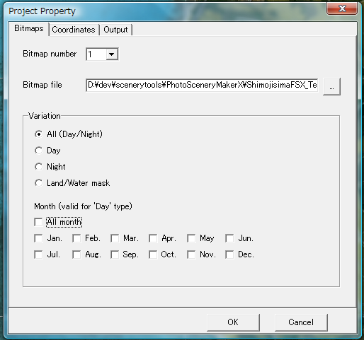
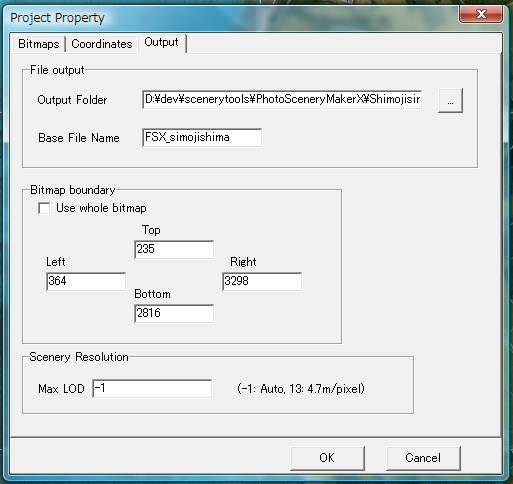

ファイルメニュー
新規作成
プロジェクトを新規作成します。
開く
既存のプロジェクトを開きます。
上書き保存
プロジェクトを上書き保存します。
名前をつけて保存
プロジェクトを別のファイル名で保存します。
プロジェクトのプロパティ
プロジェクトのプロパティを開きます。
ビットマップタブ

- 「季節のサポート」: 季節をサポートするかどうか指定します。
サポートする場合、全ての季節、および夜間（ライトマップ）のビットマップが全て必要です。
- 「夏、春、秋、冬、厳冬」: 各季節のビットマップを指定します。
- 「ライトマップ」：夜間のビットマップを指定します。
- 「水面（アルファ）」：水面のビットマップを指定します。使用しない場合は省略可能です。
座標タブ

- ビットマップ範囲 : ビットマップがカバーするエリアの緯度/経度範囲を指定します。
補正 : ２点補正を行えば、自動的に入力されます。
- 解像度 : ビットマップの解像度 (度/pixel) を指定します。
補正 : ２点補正を行えば、自動的に入力されます。
- 情報 : m/pixel 単位の解像度、ビットマップのサイズが表示されます。
出力タブ

- ファイル出力
- 出力フォルダ : シーナリファイルや中間ファイルの生成先フォルダを指定します。
- ベースファイル名 : シーナリのベースファイル名を指定します。BGL ファイルのファイル名
(拡張子除く）になります。
- ビットマップ範囲
- ビットマップ全体を使用 : チェックすると、自動的にビットマップ全体をシーナリに
使用します。チェックを外すと、以下で指定する範囲だけが使用されます。
- 上/左/右/下 : 使用するビットマップの範囲を、ビットマップ座標で指定します。
補正 : ビットマップ範囲 で指定することもできます。